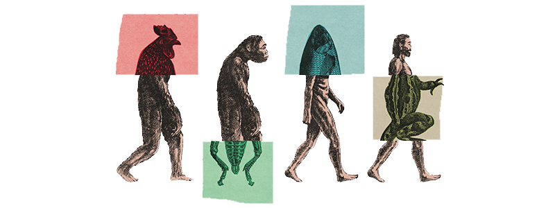

<?
	session_start(); 
    @extract($_POST);
    @extract($_GET);
    @extract($_SESSION);    
?>

<!DOCTYPE HTML>
<html lang="ko">
<head>
<meta charset="utf-8">
<meta name="viewport" content="width=device-width">
<meta name="format-detection" content="telephone=no">

<title>서대문자연사박물관 Mobile Web</title>

<link rel="apple-touch-icon-precomposed" href="app_icon.png">
<link rel="apple-touch-startup-image" href="startup_x1.png">

<link href="https://fonts.googleapis.com/css2?family=Nanum+Gothic:wght@400;700&family=Nanum+Myeongjo:wght@400;700&family=Roboto:wght@300;400;500&display=swap" rel="stylesheet">
<link rel="stylesheet" href="css/common.css">
<link rel="stylesheet" href="css/sub1_1.css">

<script src="js/prefixfree.min.js"></script>

<script>
  // <![CDATA[
  try {
   window.addEventListener('load', function(){
    setTimeout(scrollTo, 0, 0, 1); 
   }, false);
  } 
  catch(e) {}
  // ]]>
 </script>
 <script src="https://kit.fontawesome.com/f8a0f5a24e.js" crossorigin="anonymous"></script>
 <!--[if lt IE 9]> 
    <script src="http://html5shim.googlecode.com/svn/trunk/html5.js"></script>
<![endif]-->

<!--[if lt IE 9]>
    <script src="http://css3-mediaqueries-js.googlecode.com/svn/trunk/css3-mediaqueries.js"></script>
<![endif]-->
  <? include "head.html" ?>
    
    <article id="content">
        <div class="title_area">
           <h3 class="hidden">기관소개</h3>
           <h2>인사말</h2>
        </div>

        <div class="content_area">
            <div>
                <p>자연사박물관에서는 시간적 및 공간적 순간들을 반영하는 표본을 수집하여 보존하고 있습니다. 그리고 이 순간에도 우리는 천문학, 지질학, 고생물학, 동물학, 식물학, 인류학 등 지구가 품고 있는 모든 것의 이야기로부터 새롭고 중요한 정보를 계속 모아 연구를 하고, 이를 바탕으로 전시와 교육을 하고 있습니다.</p>
            </div>
            
            <div>
                <p>서대문자연사박물관은 2003년 개관한 우리나라 최초의 공립 자연사박물관입니다. 개관이후 지난 17년 동안 우리 서대문자연사 박물관은 지속적으로 표본을 수집하여 45,000여 점을 소장하고있습니다. <br><br>다양한 전시회와 교육 프로그램을 통해 연간 35만 명의 방문객들과 자연사 지식을 공유하며, 과학, 자연 및 문화 세계를 인식시키는데 노력해왔습니다.그 결과 서대문자연사박물관은 명실 공히 수도권의 대표적인 자연사박물관으로 자리 잡게 되었습니다. <br><br>서대문자연사박물관이 더욱 발전하기 위해서는 학예사와 직원들의 노력 뿐 아니라 여러분들의 적극적 참여와 활동이 필요합니다. 지속가능한 자연과 인간의 미래를 위해 자연사에 대해 끊임없이 많은 관심을 기울여 주시기 바랍니다. <span>서대문자연사박물관장 이남숙</span></p>
            </div>
       </div> 
    </article>
    
    <!-- 푸터 영역 -->
  <? include "foot.html" ?>

 <script src="js/jquery-1.12.4.min.js"></script>
 <script src="js/jquery-migrate-1.4.1.min.js"></script>
 <script src="js/nav_new.js"></script>
 <script src="js/topmenu.js"></script>
 
</body>
</html>
